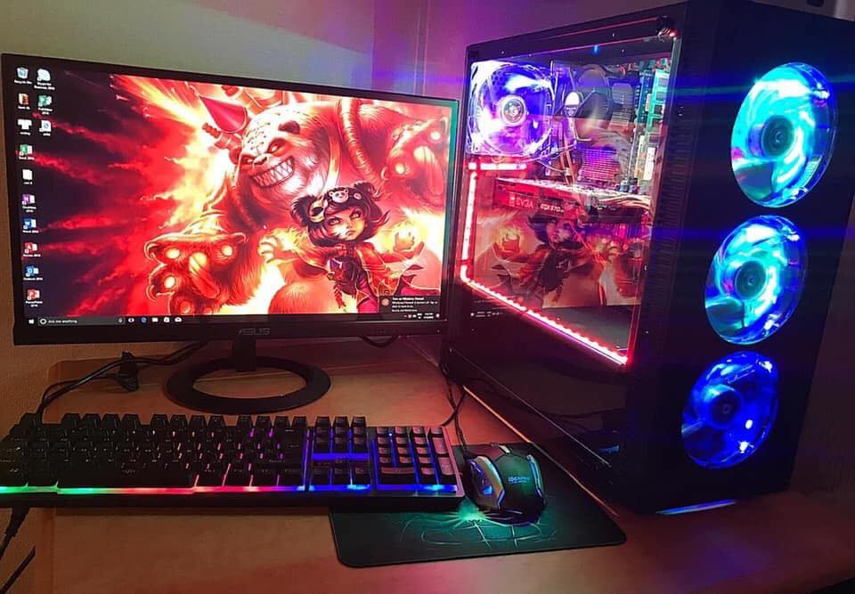

インターネットとパソコンを本気で活用するためのテクニック誌 パソコンとインターネットの楽しさや利便性に目覚めた中級ユーザーのための製品情報と活用テクニックを掲載。大ボリューム巻頭特集ではハードウェア、ソフトウェア(OSを含む）、インターネットをテーマに、実践的な活用法をわかりやすく紹介します。 最新情報とおもしろい特集記事が充実していて、読み応えは十分。最新機種の紹介やソフトのレビューなどもあり、かゆいところに手が届く実用的な仕様になってます。初心者には濃いかも知れないけれど、スキルがかなり伸びるので、オススメしたい。この雑誌は、バックナンバーを保持しておくことでもかなり役に立つケースが多いので、数年にわたるバックナンバー、未だに捨てずに全て残してます。
数年前のゲーム向け「ノートPC」の性能は、ゲーム向け「デスクトップPC」より大きく劣り、価格もノートPCのほうがかなり高めでした。しかし、技術は進歩し、GeForce GTX 10シリーズが登場してからは、性能差も価格差もだいぶ縮まってきています。「部屋が狭い！」、「持ち歩きたい！」という方は、デスクトップではなく、ゲーミングノートも是非検討してみてはいかがでしょうか？
MANHKIENPCは、Intel、Asus、MSI、Asrock、AMD、NDIVIA、Gigabyteなどのテクノロジー企業の大きなパートナーです。